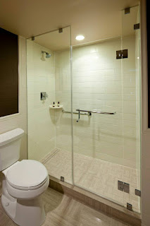

Kaca yaitu salah satu faktor yang cukup penting pada sebuah bangunan baik untuk rumah tinggal, pertokoan, gedung bertingkat ataupun multi use building. Tapi kini, penerapan kaca kian meluas. Banyak tipe dari kaca yang dapat di pakai untuk banguan ataupun rumah tinggal.
Tidak kaca tempered, kaca shower, kanopi kaca, parket kayu jati dan masih banyak lagi. Segala material tersebut bisa di aplikasikan harga sebuah hunian terlihat lebih indah nyaman dan juga aman. Berikut ini sedikit review mengenai kaca bagi sebuah banguanan, fungsi utama dan bagaiman memilih kaca yang layak untuk sebuah hunian baik rumah, kantor maupun gedung. Akan di jelaskan juga mengenai lantai kayu jati terbaik yang dapat anda beli.
Distributor & Supplier Kaca Shower Dumai

Anda pastinya meninginkan desain kamar mandi rumah layaknya kamar mandi hotel berbintang yang menggunakan toilet duduk serta dilengkapi shower maupun bath tub. Dan sensasi mandi menjadi lebih asik untuk dinikmati. Pelaksanaan ini memang desain shower berbahan kaca memang lebih banyak dipakai ketimbang desain shower berbahan tirai. Jika pemasangannya juga betul-betul gampang dijalankan dan tak memerlukan waktu yang lama.
Tak anda sedang memerlukan kaca shower Dumai untuk kamar mandi anda, anda bisa segera mengunjungi dis.or.id. Disana tersedi kaca shower Dumai dengan pelbagai ukuran dan juga harga yang juga cukup terjangkau. Harga yang ditawarkan malah tergolong amat murah.
Info Pemesananan Selengkapnya
Google Maps: https://www.google.com/maps/d/u/0/viewer?mid=1I5MJD15eG4u4a5bgD4SWwLmUemJgyEPx&ll=-7.27380280025364%2C112.65243155000007&z=18
Note: https://www.facebook.com/notes/distributor-of-industrial-supply/pabrik-supplier-kaca-shower-kaca-pembatas-shower-kamar-mandi/1785693275063885/
Event: https://www.facebook.com/events/308143373033869/
Portfolio Produk: https://www.facebook.com/1681607345472479/photos/?tab=album&album_id=1712628919036988
Distributor, Supplier & Jasa Pasang Kanopi Kaca
Note: https://www.facebook.com/notes/distributor-of-industrial-supply/pabrik-supplier-kaca-shower-kaca-pembatas-shower-kamar-mandi/1785693275063885/
Event: https://www.facebook.com/events/308143373033869/
Portfolio Produk: https://www.facebook.com/1681607345472479/photos/?tab=album&album_id=1712628919036988
Distributor, Supplier & Jasa Pasang Kanopi Kaca

Pintu Kaca Shower pada kamar mandi adalah salah satu pilihan yang bagus untuk desain interior kamar mandi modern. Sifat utama material bahan atap akrilik juga dapat disebut atap acrylic, ini yakni warnanya yang jernih tembus pandang. Tak hanya sekedar tembus pandang. Ada beberapa alasan mengapa Pintu Kaca Shower banyak dipakai salah satunya merupakan kaca lebih terlihat bersih dan rapi dan juga lebih mudah dalam perawatannya. Jika tembus pandang, kaca meresap cahaya yang masuk sehingga semakin tebal kaca karenanya kian sedikit sinar yang bisa melaluinya, karenanya sifat transparannya makin berkurang.|Di samping pintu kaca shower akan membikin kamar mandi kecil menonjol lebih besar. Pada atap akrilik, perembesan sinar yang terjadi demikian kecil sehingga padahal ketebalannya bertambah, sifat transparannya tak banyak berubah.
Seiring dengan perkembangan dunia properti, sekarang kanopi kaca tempered telah berkembang kencang mengikuti arsitektur modern. Terdapat banyak kanopi dengan berbagai ukuran dan ketebalan yang dapat anda pilih sesuai dengan yang anda butuhkan. Dis.or.id juga menyediakan jasa pemasangan kanopi kaca yang tentunya dengan bantuan daya professional yang sudah berpengalaman. Banyak bangunan seperti gedung perkantoran, perumahan, ruko dan apartement yang mengaplikasikan kanopi kaca tempered. Kalau fungsi utama kanopi sebagai pelindung untuk bangunan tersebut, pemasangan kanopi kaca juga dapat membikin bangunan menjadi terlihat lebih cantik dan menarik, apalagi memakai konsep yang sama dengan konsep rumah minimalis. Setelah kaca untuk atap kanopi cukup digemari.
Jasa Maintenance Kaca
Umumnya ditahui banyak pemilik gedung kaca yang ingin merawat bangunan. Beraneka, kaca akan menonjol kusam sebab sudah lama tak dibersihkan. Membersihkan komponen kaca gedung Anda yang mungkin rusak, pecah, atau mengalami dilema lainnya.
Dengan menggunakan bahan pembersih yang akan membikin kaca menonjol bersih seperti pertama kali dipasang. Lebih dari itu, Seandainya spesialis yang dimilik oleh dis.or.id juga bisa membenarkan kaca yang rusak.
Tak anda mebutuhkan jasa maintenance kaca, anda dapat mengunjungi dis.or.id. Dengan daya spesialis yang siap untuk menjalankan pembersihan dan bahan pembersih yang di miliki, kaca gedung perkantoran Anda akan kelihatan seperti baru lagi. Apabila spesialis juga benar-benar mempertimbangkan. Kecuali hanya dalam hal membersihkan kaca, mereka juga mampu melakukan pembetulan serta penggantian kaca yang mengalami kerusakan.
Jasa Pemasangan Kaca Tempered
Kini jasa pemasangan kaca tempered menjadi opsi yang tepat ketika Anda berharap mempunyai sebuah hunian atau gedung perkantoran yang komponen tertentu terbuat dari kaca tempered. Dibutuhkan kaca ini dihasilkan dari kaca float berkualitas tinggi lewat pelaksanaan pemanasan thermal di mana kaca dipanaskan hingga pada spot lunak kemudian didinginkan dengan pesat. Dis.or.id mempunyai segala kekuatan pakar yang di rekrut hanya mereka yang profesional yang tahu persis bagaimana metode menerapkan alat dan bagaimana membersihkan kaca gedung bertingkat. Kecuali itu saja. Banyak komponen properti yang dapat diciptakan dengan bahan berupa kaca tempered. Sekarang, kian banyak properti yang memakai kaca tempered. Namun dulu cuma gedung perkantoran atau pusat perbelanjaan modern saja yang menerapkan jenis kaca ini, kini rumah hunian juga sudah dibangun dengan kaca tempered. Kecuali ini tak lain karena kian banyak orang yang memahami kualitas serta keunggulan dari kaca tempered ini.
Jikalau itu, berjenis-jenis komponen properti akan kian menarik sekiranya dijadikan dari kaca tempered seperti kanopi, pintu, kamar mandi, dan balkon.
Kecuali energi pakar yang dimiliki oleh dis merupakan yang professional dan berpengalaman. Disana anda bisa memanfaatkan jasa pemasangan kaca tempered untuk segala jenis bidang maupun bangunan. Dis.or.id menawarkan jasa pemasangan kaca tempered karena kami memiliki alat yang komplit. Anda dapat langsung mengunjungi dis.or.id untuk menerima kabar mengenai jasa pemasangan kaca tempered, memakai kaca tempered dan pastinya hasil yang dikasih bahkan akan cocok dengan apa yang Anda inginkan. Harga yang ditawarkan untuk pemasangan kaca tempered benar-benar murah.
Distributor & Supplier Pintu Kaca

Ada juga pintu kaca dengan bingkai dengan desain yang berbeda seperti folding dan sliding. Daya jenis kaca yang dapat Anda pilih untuk pintu kaca Anda seperti kaca tempered yang sedang booming atau kaca non-tempered yang harganya lebih terjangkau. sebagian ragam kaca yang paling kerap kali digunakan untuk membikin pintu kaca, mulai dari ragam kaca tempered hingga kaca non-tempered. Dalam hal ini, terdapat sebagian ragam kaca dengan kualitas yang terbaik.
Anda bisa memiliki pintu kaca unggulan anda kini juga dengan mengunjungi dis.or.id. Disana terdapat bermacam variasi pintu kaca yang bisa anda jadikan pilihan.
Kaca yang di gunakan yakni kaca dengan kwalitas terbaik. Untuk budget yang lebih sedikit, Anda bisa memilih macam kaca non-tempered.
Jual Kaca Cermin
Kaca cermin tak hanya berfungsi untuk bercermin saja tetapi juga sebagai pemanis ruangan. Kaca cermin dilapisi dengan pelapis transparan tipis dan oksida logam sebagai lapisan pelapis. kaca cermin umum diterapkan pada bukaan pintu atau jendela dinding luar, yang nantinya diinginkan berpenampilan mewah pada bangunan. Banyak produsen kaca cermin yang membikin dengan desain yang berbeda. Kini, cermin tak cuma berbentuk persegi atau persegi panjang saja. Jadi, Anda memiliki banyak alternatif untuk memutuskan cermin yang Anda pilih benar-benar dapat mempercantik interior rumah Anda. Pun juga komponen tepi. Sementara itu, dikala diamati dari luar, kaca ini reflektif. Artinya, Anda tidak dapat melihat yang ada di dalam ruangan. Anda seolah sedang bercermin.
Anda juga dapat tentukan apakah ingin memiliki cermin yang mempunyai frame atau tak. Artinya, cermin tersebut tak mempunyai frame atau pigura. Banyak orang yang lebih menyenangi dengan desain kaca cermin minimalis. Tidak figur lemari pakaian di mana komponen pintunya terbuat dari kaca cermin. Jadi, orang di luar tak dapat melihat Anda berada di dalam. Harga yang terjangkau dan kwalitas terbaik yaitu ciri khas dari dis.or.id. Dis.or.id menyediakan kaca cermin yang bisa anda beli dengan harga yang benar-benar murah dan dengan kwalitas terbaik. Tetapi kunjungi dis.or.id untuk mendapatkan penawaran menarik.
Jasa Pemasangan Railing Kaca
Tidak konsep rumah modern ketika ini, kebanyakan rumah dibangun dengan desain minimalis. Lupakan bahan seperti kayu. Pastikan komponen hal yang demikian terbuat dari bahan aluminum yang kuat. Dalam hal kaca, Anda bisa memilih kaca tempered.
Anda dapat memilih kaca dengan mutu terbaik. Tak ini tak cuma diatur oleh ketebalan atau harga tapi juga oleh macam. Ini adalah macam kaca yang benar-benar baik dan kuat. Sekiranya menyokong keamanan, railing kaca ini juga akan mempercantik desain interior rumah Anda. Dengan demikian, pecahan kaca tempered tidak akan melukai orang yang terkena pecahan. Pecahannya sungguh-sungguh kecil dan lembut sehingga tak akan melukai siapa saja yang terkena pecahan. Ini menentukan kuatnya konstruksi railing kaca. Kini pasti, dengan railing ini, Anda tak cuma membikin tangga dan balkon lebih aman, melainkan juga untuk memperindah tampilan interior rumah Anda.
Railing kaca dengan mutu terbaik bisa anda dapatkan di dis.or.id. ukuran dan ketebalan railing kaca sudah tersedia. Tentu dengan harga yang murah namun konsisten berkelas.
Distributor & Supplier Pintu Lipat Kaca
Bukan hanya komponen depan saja yang dipasang pintu kaca lipat tapi bagian dalam juga dapat. Pintu lipat kaca diaplikasikan saat ruangan diterapkan untuk hal yang privacy. Anda bisa mencari model pintu lipat kaca tempered minimalis lainnya. Sekarang pasti, modelnya banyak layak dengan yang Anda butuhkan.
Banyak hal yang sudah Anda kenal perihal pintu kaca lipat tempered. Akan namun, ada juga penentu harga lainnya seperti aksesoris. Kini, banyak kantor yang tak lagi mempunyai ruangan yang disekat dengan tembok dan dikala ini beralih dengan ruangan disekat dengan menerapkan kaca.
Jasa Pemasangan Kubikel Toilet

Dikala ini banyak desain WC yang didominasi oleh kubikel/cubicle yang mempunyai tampilan lebih modern dan mewah. Banyak keuntungan yang dapat didapat dengan menggunakan kubikel WC seperti bisa membikin kamar kecil terlihat lebih bersih dan juga cuma memerlukan sedikit space.
Anda juga dapat membuat kamar mandi di space yang lebih kecil dan tak memerlukan lahan yang semacam itu besar untuk membuat kamar mandi yang banyak. Disana terdapat kubikel kaca dengan bermacam-macam ukuran dan ketebalan dengan harga yang cukup terjagkau di bandingkan dengan tempat lainnya. Sekiranya anda tertarik untuk memiliki kubikel kamar mandi, anda bisa segera mengunjungi dis.or.id.
Tersedia berjenis-jenis ukuran serta ketebalan dari kubikel yang dapat anda pilih pantas dengan yang anda inginkan.
Tetapi pengaplikasian kaca di kamar mandi bisa jadi problem saat Anda meletakkannya dengan salah. Justru embun dapat melekat di kaca dan lambat laun bisa membuat kaca tidak sejernih semula.
Distributor & Supplier Partisi Kaca

Partisi kaca dimana saja. hanya sebagai pembatas di mall, hotel, atau kantor-kantor saja, melainkan juga sebagai sekat ruangan di rumah hunian. Sekarang, partisi kaca ini juga untuk rumah hunian. Belum lagi biaya pemasangan yang tidak murah. Tarif yang satu ini tergantung lama proses. Berbeda jika Anda memilih partisi kaca. Atas pertimbangan efisiensi, banyak orang yang beralih ke partisi kaca. Mutu, kini banyak rumah hunian yang partisi kaca. Pun ruangan disekat dengan partisi ini seperti kamar mandi dalam dan taman dalam ruangan. Akan namun, Anda sepatutnya selektif dalam hal memilih kaca untuk partisi. , Anda semestinya observasi mutu kaca yang diaplikasikan. Sebab juga dengan tipe kaca. Karena macam kaca ini menentukan privacy ruangan yang disekat. Ada kaca transparan, semi transparan, dan juga kaca cemin yang ruangan sangat privat. Jika anda sedang mencari distributor dan supplier partisi kaca yang kaca dengan kualitas terbaik, anda tinggal mengunjungi dis.or.id. Disana anda akan mendapatkan partisi kaca yang sesuai dengan keinginan anda.